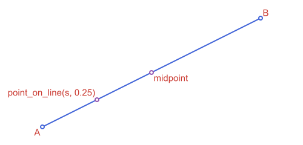
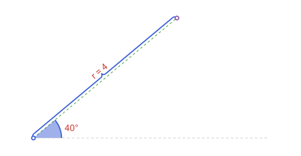
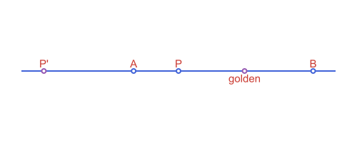
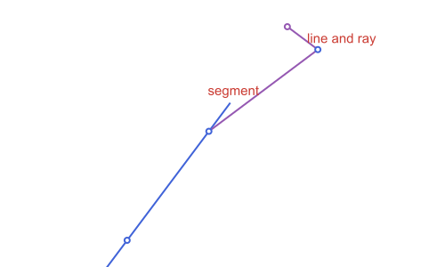

Cookbook: Points & Segments
Short recipes for things people ask of a geometry package: a goal, the call that does it, and its result. Each block defines what it needs, so you can copy one without reading the ones before it. The recipes point to the page that explains the function in depth.
using ApolloniusWorking with points and segments
The midpoint, or a point a fraction of the way along
A, B = APPoint(1.0, 2.0), APPoint(7.0, 5.0)
s = APSegment(A, B)
midpoint(s), point_on(s, 0.25)([4.0, 3.5], [2.5, 2.75])
point_on(s, t) takes a fraction of the way from the first end to the second. It works on a line, a segment or a ray, and t can leave [0, 1] to go past the ends.
A point at a given distance and direction
polar_point(4.0, pi / 3), polar_point_deg(4.0, 60.0), polar_point_deg(4.0, 60.0, APPoint(1.0, 1.0))([2.0000000000000004, 3.4641016151377544], [2.0000000000000004, 3.4641016151377544], [3.0000000000000004, 4.464101615137754])
Divide a segment in the golden ratio, or find a harmonic conjugate
A, B = APPoint(0.0, 0.0), APPoint(10.0, 0.0)
golden_ratio_point(A, B), harmonic_conjugate(A, B, APPoint(2.0, 0.0))([6.180339887498948, 0.0], [-3.333333333333334, 0.0])
The distance from a point to a segment, a line or a polygon
p = APPoint(5.0, 4.0)
distance(p, APSegment(APPoint(0.0, 0.0), APPoint(3.0, 0.0))), distance(p, APLine(APPoint(0.0, 0.0), APPoint(1.0, 0.0)))(4.47213595499958, 4.0)
See Measurements & Queries for what distance means for each type.